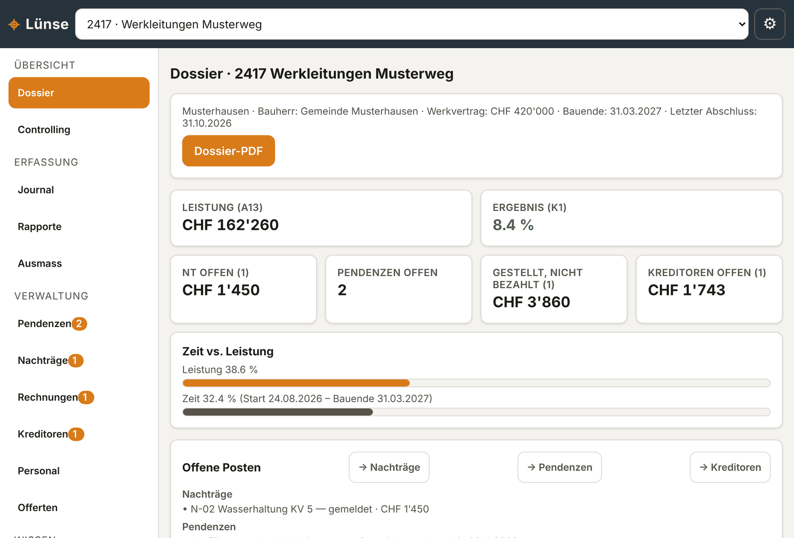
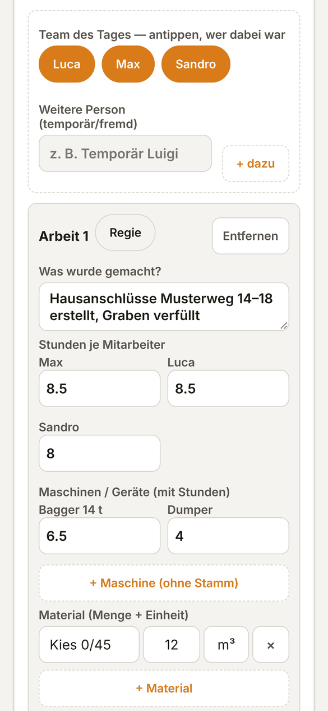
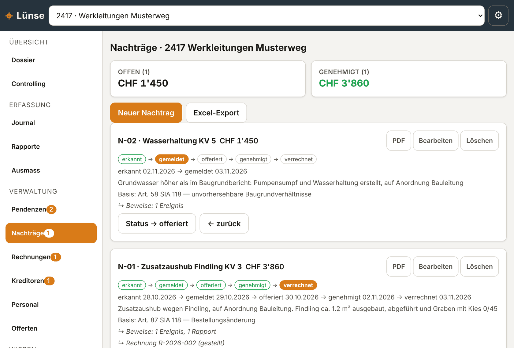
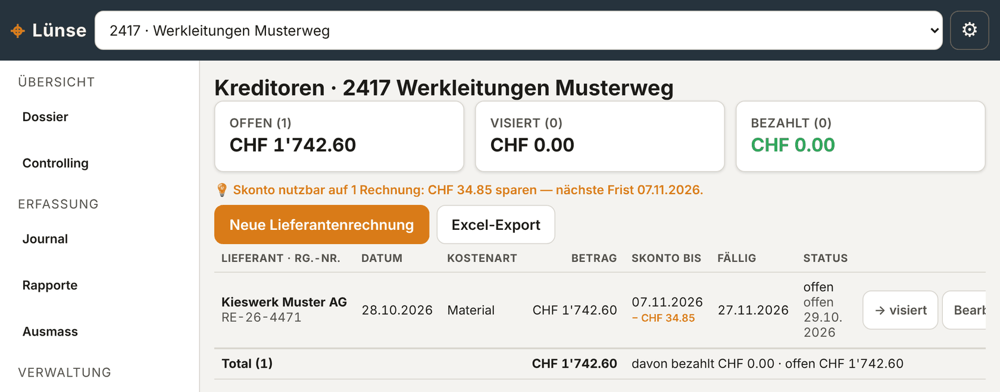
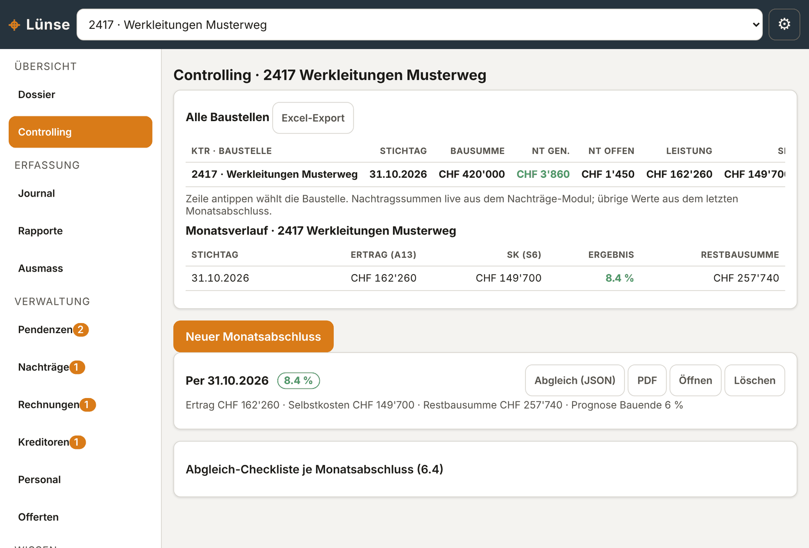

Keine Regiestunde geht mehr verloren.
Jede Baustelle mit Rapporten, Nachträgen, Rechnungen und Kreditoren in einem Dossier. Der Polier liefert den Rapport vom Handy, im Büro wird aus Regie und Nachtrag mit einem Klick die Rechnung.
- Von einem Bauführer entwickelt
- Am PC im Büro, am Handy auf dem Platz
- Daten bleiben bei Ihnen


Was Sie aus dem Alltag kennen.
Marge geht selten auf der Baustelle verloren. Sie geht danach verloren, beim Übertragen, Suchen und Verrechnen.
Vergessene Regie
Leistungen, die auf dem Weg vom Rapport ins Büro untergehen. Jede davon ist verschenktes Geld.
Doppelerfassung
Auf der Baustelle auf Papier, im Büro nochmals abgetippt. Doppelte Arbeit, doppelte Fehlerquelle.
Verpasste Fristen
Ein Nachtrag, der nicht rechtzeitig angezeigt wird, ist nach SIA 118 schwer durchzusetzen.
Verstreute Belege
Fotos, Lieferscheine und Ausmasse liegen überall. Im Streitfall fehlt der Nachweis.
Ein Bagger trifft auf einen Findling.
Vom Platz ins Büro, und daraus ohne Büroabend eine Rechnung.
- erkannt
- gemeldet
- offeriert
- genehmigt
- verrechnet
Beispiel: sechs Tage vom Findling zur Rechnung. Jeder Schritt mit Datumsstempel, als Nachweis nach SIA 118.
-
1
Foto und zwei Worte
Auf dem Platz ein Foto, Stichwort «Regie», kurze Notiz. Lünse legt den Nachtrag und die Pendenz selbst an.
-
2
Rapport vom Polier
Am Handy Team antippen, Stunden, Maschinen, Material. Steht «auf Anordnung der Bauleitung» im Text, setzt sich das Regie-Häkchen von selbst.
-
3
Nachtrag im Büro
Beziffern, melden, offerieren. Jeder Statusschritt bekommt einen Datumsstempel. Das PDF für den Bauherrn enthält Begründung, Fristenverlauf und Fotos.
-
4
Rechnung mit einem Klick
Unterschriebener Regierapport oder genehmigter Nachtrag, ein Klick, Rechnung als PDF. Die Grundlage springt auf «verrechnet».
Der Überblick, den Excel nie hatte.
Am grossen Bildschirm, mit allen Baustellen in der Seitenleiste.
Nachträge mit Fristenverlauf
Jeder Nachtrag zeigt, wann er erkannt, gemeldet, offeriert und genehmigt wurde, mit der Grundlage nach SIA 118 und den Beweisen aus Journal und Rapport. Offen und genehmigt stehen oben als Summe.

Kreditoren mit Skonto-Wächter
Lieferantenrechnungen je Baustelle, per QR-Code erfasst. Beim Visieren erscheinen die Materialzeilen aus den Rapporten zum Abgleich, und Lünse warnt, bevor eine Skontofrist abläuft.

Controlling je Monat
Monatsabschluss mit Vorschlägen aus Rechnungen und Kreditoren. Ertrag, Selbstkosten, Ergebnis und Restbausumme je Baustelle, ohne Abtippen.

Alles zu einer Baustelle. An einem Ort.
Einmal erfasst, überall weiterverwendet. Vom Rapport bis zum Monatsabschluss.
Dossier je Baustelle
Leistung, Ergebnis, offene Nachträge, Pendenzen und Kreditoren auf einen Blick. Als PDF für die Bausitzung.
Nachträge
Aus Regie-Einträgen erkannt, mit Fristen-Nachweis nach SIA 118 und versandfertigem PDF für den Bauherrn.
Rechnung aus Regie und Nachtrag
Aus Regierapport oder genehmigtem Nachtrag direkt die Rechnung. Offen, gestellt, bezahlt immer im Blick.
Kreditoren
QR-Rechnung einlesen, Betrag und IBAN füllen sich selbst. Visieren mit Lieferschein-Abgleich, Skonto-Wächter.
Offerte & Ausmass
Gliederung nach NPK-Kapiteln mit Ihren eigenen Positionen und Preisen. Ausmass mit Grabenprofil, Mengen rechnen sich.
Rapport vom Platz
Der Polier erfasst Team, Stunden, Maschinen und Material am Handy, auch ohne Empfang, und übergibt den Rapport ans Büro. Daraus die Stunden für den Treuhänder.
«Ich habe Lünse gebaut, weil mich der Papierkram bei Regie und Rapporten selber jeden Tag genervt hat.»
Tobias Vogel · Bauführer Tiefbau, Region Aargau · Entwickler von Lünse
Was das für Sie heisst
- Kein Verkäufer, sondern ein Berufskollege, der selbst täglich damit arbeitet.
- Kurze Einarbeitung, weil Begriffe und Abläufe vom Bau kommen.
- Für die Schweiz gebaut: NPK-Gliederung, MwSt 8.1 %, SIA 118, LMV-Stunden.
- Direkter Draht zum Entwickler statt Hotline-Warteschlange.
Was Bauunternehmer zuerst fragen.
Auf welchen Geräten läuft Lünse?
Im Büro am PC oder Laptop, im Browser oder als installierte App. Auf dem Platz am Handy oder Tablet. Nach dem ersten Öffnen funktioniert Lünse auch ohne Internet.
Wo liegen meine Daten?
Auf Ihren eigenen Geräten. Es gibt kein Konto und keine Cloud-Datenbank. Rapporte, Fotos und Rechnungen verlassen das Gerät nur, wenn Sie sie selbst weitergeben.
Wie kommt der Rapport vom Polier ins Büro?
Der Polier drückt auf der Rapport-Karte «Übergeben» und schickt die Datei per WhatsApp oder E-Mail. Der Bauführer liest sie mit einem Klick ein, Fotos inklusive. Eine automatische Synchronisation zwischen Geräten ist der nächste Entwicklungsschritt.
Was passiert, wenn ein Gerät kaputtgeht?
Ein Backup ist eine einzige Datei, die Sie auf PC, Server oder USB-Stick ablegen. Lünse erinnert daran, wenn das letzte Backup älter als sieben Tage ist. Tabellen lassen sich zusätzlich als CSV für Excel exportieren.
Gibt es eine Sammelrechnung aus dem Ausmass?
Noch nicht. Heute entsteht die Rechnung aus dem Regierapport oder dem Nachtrag. Rechnungen aus Ausmass und Einheitspreis mit Akonto- und Schlussrechnung entwickle ich gemeinsam mit den Pilotbetrieben.
Macht Lünse auch die Löhne?
Bewusst nicht. Lünse liefert dem Treuhänder die Stunden, Absenzen und Reisezeiten nach LMV. Die Lohnabrechnung bleibt beim Profi.
Werden Sie einer der ersten Betriebe.
Für den Start suche ich eine kleine Gruppe Pilotbetriebe, die Lünse zu Vorzugskonditionen einsetzen. Im Tausch gegen ehrliches Feedback und, wenn es passt, eine Referenz.
- 01Reduzierter Pilotpreis inklusive erstem Jahr Wartung.
- 0230 Tage unverbindlich an einer echten Baustelle testen.
- 03Ihre Wünsche fliessen direkt in die Weiterentwicklung ein.
- 04Als Gründungskunde später Vorzugskonditionen auf neue Versionen.
20 Minuten. Ihre Baustelle. Ihre Zahlen.
Am besten zeige ich es Ihnen direkt an einem Ihrer Projekte, online oder bei Ihnen vor Ort. Rufen Sie an oder schreiben Sie kurz.